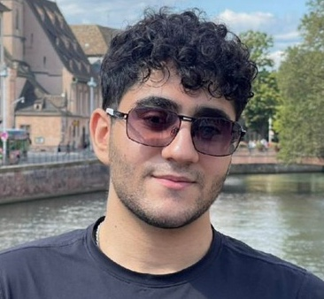

École polytechnique fédérale de Lausanne (EPFL)
M.Sc. in Computer Science, AI and Data Science Specialization (Sep. 2025 – Present)
GPA: 5.85/6

I am an M.Sc. student in Computer Science at EPFL, specializing in AI and Data Science. My research asks how agents can learn useful world models and act on them. It spans reinforcement learning and robotics, world models and generative video.
I first interned at the Max Planck Institute for Informatics with Prof. Vahid Babaei. At INSAIT, with Prof. Luc Van Gool and Prof. Danda Paudel, I worked on world models for interactive video generation. Since February 2026, I have been a research intern with Prof. Glen Berseth at Mila's Robotics and Embodied AI Lab (REAL), working on causal world models that tell apart what the agent causes from what the environment does on its own. Since September 2026, I have also worked with Prof. Aude Billard at EPFL's LASA lab on constraint learning that transfers across different robots. I hold a B.Sc. in Computer Engineering from Sharif University of Technology, with a minor in Applied Mathematics.
I am looking for research internships for 2027.
École polytechnique fédérale de Lausanne (EPFL)
M.Sc. in Computer Science, AI and Data Science Specialization (Sep. 2025 – Present)
GPA: 5.85/6
Sharif University of Technology
B.Sc. in Computer Engineering, Minor in Applied Mathematical Science (2020 – 2025)
Overall GPA: 19.17/20, Major GPA: 19.75/20

StateSpaceDiffuser: Bringing Long Context to Diffusion World Models
Nedko Savov, Naser Kazemi, Deheng Zhang, Danda Pani Paudel, Xi Wang, Luc Van Gool
NeurIPS 2025

Exploration-Driven Generative Interactive Environments
Nedko Savov, Naser Kazemi, Mohammad Mahdi, Danda Pani Paudel, Xi Wang, Luc Van Gool
CVPR 2025

Learning Generative Interactive Environments by Trained Agent Exploration
Naser Kazemi, Nedko Savov, Danda Pani Paudel, Luc Van Gool
NeurIPS 2024 Workshop (D3S3)
Outside research, I run and train calisthenics.